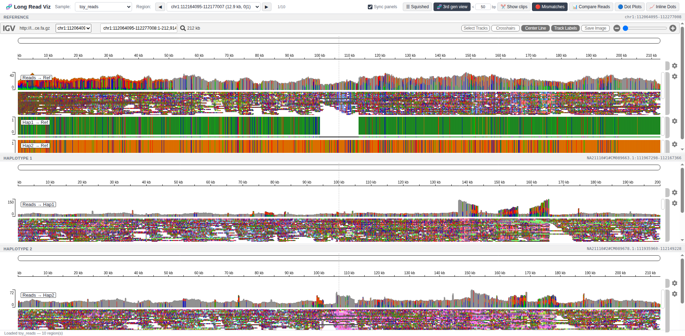
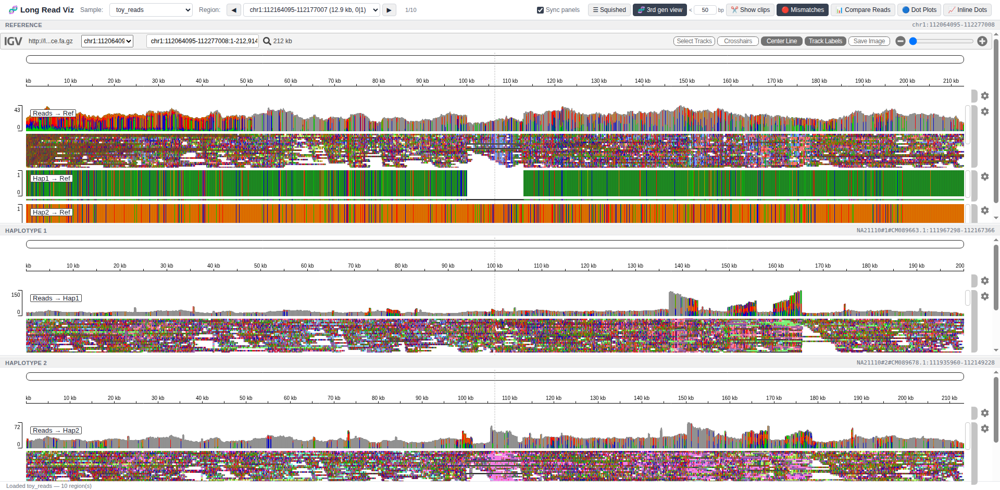
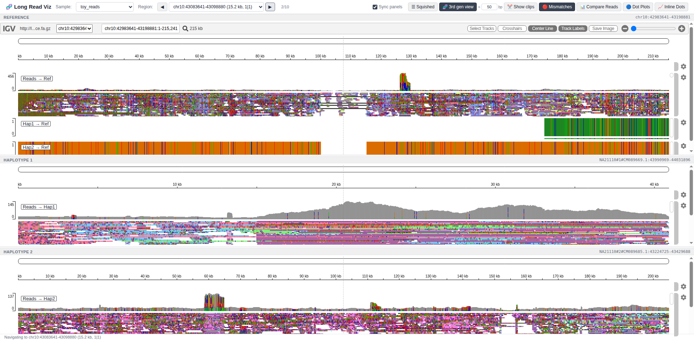
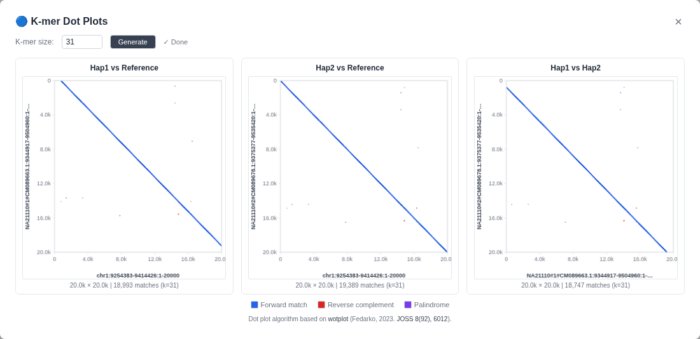

Pre-process diploid long-read sequencing data and explore structural variants across a reference genome and both haplotype assemblies — simultaneously, in linked IGV.js panels.
Everything you need to go from raw reads and diploid assemblies to an interactive, publication-ready structural-variant browser.
Reference, Haplotype 1, and Haplotype 2 each have their own IGV.js browser instance. Navigate in any panel and the others follow via real-time server-side coordinate translation.
Base-exact projection of reference → assembly coordinates using CIGAR-string walking. Gaps between alignment blocks are classified as deletions, insertions, inversions, translocations, or complex events.
Load regions from a manifest JSON or SV VCF. Step through every SV with ◀/▶ buttons or arrow keys. Pre-computed assembly coordinates mean navigation is instant.
Reads can be served from BAM or CRAM. CRAM tracks are decoded on-the-fly using the per-panel reference FASTA. Full byte-range HTTP for efficient random access.
Spurious small indels (≤ 3 bp) are hidden by default, matching Java IGV's third-generation sequencing mode. Squished display gives a compact overview; expand with one click.
Reads are automatically coloured by haplotype phase (HP tag): green for hap1, orange for hap2, grey for ambiguous. Competitive alignment scoring assigns each read to its best-matching haplotype.
The visualization server is pure Python stdlib — no Node.js, no external web framework. igv.js is bundled in the Docker image. Run it anywhere with a single command.
Apptainer/Docker image ships minimap2 2.28, samtools 1.21, htslib 1.21, and the full pipeline. One container for both preprocessing and visualization.
Comprehensive unit tests cover coordinate mapping, CIGAR projection, SV classification, server endpoints, CRAM handling, and toy-dataset generation. Runs on every push.
preprocess.sh takes three inputs — haplotype assemblies, long-read alignments, and a reference — and produces all files needed for linked IGV.js browsing.
Both haplotype assemblies are aligned to the target reference with minimap2 -x asm5 --eqx, producing sorted BAM + PAF output. The asm5 preset is optimized for ≥ 99% identity (HPRC assemblies vs. a population reference).
The PAF alignments are parsed into a sorted interval index (gzipped JSON + tabix-indexed BED). The JSON index supports O(log n) binary-search queries and stores per-block CIGAR strings for base-exact coordinate projection.
Reads are streamed from the CRAM via samtools fastq and re-aligned to each haplotype assembly with minimap2 -x map-ont (or map-hifi for PacBio). Output is a sorted, indexed BAM per haplotype.
The minimap2 Alignment Score (AS:i:) for every read is compared between the hap1 and hap2 BAMs. Each read is tagged with HP:i:1 (hap1), HP:i:2 (hap2), or HP:i:0 (ambiguous / equal scores). IGV natively groups, sorts, and colours reads by the HP tag — no manual configuration required.
The reference genome is aligned back to each assembly (minimap2 -x asm5 --eqx with swapped query/target). These assembly-coordinate BAMs serve as cross-check tracks in the assembly panels and confirm every SV from both perspectives.
Each haplotype assembly is aligned to the other (hap2→hap1 and hap1→hap2) with minimap2 -x asm5 --eqx, producing assembly-coordinate tracks for direct haplotype-vs-haplotype comparison.
| File | Description |
|---|---|
| *_hap{1,2}_to_ref.bam(.bai) | Assembly aligned to reference — reference-coordinate BAM |
| *_hap{1,2}_to_ref.paf | PAF alignment used for coordinate mapping |
| *_hap{1,2}_to_ref.mapping.json.gz | Compact JSON coordinate-mapping index |
| *_hap{1,2}_to_ref.mapping.bed.gz(.tbi) | Tabix-indexed BED coordinate map |
| *_reads_to_hap{1,2}.bam(.bai) | Reads aligned to each haplotype assembly, tagged with HP:i: haplotype phase (1 = hap1, 2 = hap2, 0 = ambiguous) |
| *_ref_to_hap{1,2}.bam(.bai) | Reference aligned to each haplotype — assembly-coordinate BAM |
| *_hap2_to_hap1.bam(.bai) | Hap2 aligned to hap1 — cross-haplotype comparison track in hap1 panel |
| *_hap1_to_hap2.bam(.bai) | Hap1 aligned to hap2 — cross-haplotype comparison track in hap2 panel |
Run the pipeline with Apptainer (recommended for HPC) or Docker. The container image includes all dependencies.
Run from the parent directory containing your sample folder. References are cached in ${PWD}/references/.
# cd to the parent directory of your sample folder
cd /path/to/projects
apptainer run \
--bind "${PWD}:/work" \
docker://ghcr.io/jlanej/long_read_visualization:main \
--hap1 /work/NA21110/NA21110_hap1.fa.gz \
--hap2 /work/NA21110/NA21110_hap2.fa.gz \
--cram /work/NA21110/NA21110.t2t.cram \
--genome chm13v2.0 \
--output-dir /work/output/NA21110 \
--threads 32 \
--ont
If the CRAM was encoded with a different reference than the one used for assembly alignment,
pass --cram-ref with either an encoding-reference FASTA path or a supported genome key so samtools can decode it correctly.
For example, if your CRAM was encoded with the 1KG ONT Vienna variant
(chm13v2.0_maskedY_rCRS), pass --cram-ref chm13v2.0_maskedY_rCRS
to auto-download and use that reference for decoding.
PacBio HiFi reads use the map-hifi preset instead of map-ont.
cd /path/to/projects
apptainer run \
--bind "${PWD}:/work" \
docker://ghcr.io/jlanej/long_read_visualization:main \
--hap1 /work/HG002/HG002_hap1.fa.gz \
--hap2 /work/HG002/HG002_hap2.fa.gz \
--cram /work/HG002/HG002.hifi.cram \
--genome chm13v2.0 \
--output-dir /work/output/HG002 \
--threads 32 \
--hifiA complete toy dataset is bundled in the repository. This runs the full pipeline on 40 pre-selected deletion SVs from NA21110.
# From the repository root
cd /path/to/long_read_visualization
apptainer exec \
--bind "${PWD}:/work" \
docker://ghcr.io/jlanej/long_read_visualization:main \
bash /opt/long_read_visualization/scripts/launch_server.sh --toy
This runs the pipeline on the bundled data, generates the server config, and starts the server at http://localhost:8080.
After running the pipeline, generate a server config TSV and start the visualization server.
# Step 1: generate config
apptainer exec \
--bind "${PWD}:/work" \
docker://ghcr.io/jlanej/long_read_visualization:main \
python3 /opt/long_read_visualization/scripts/generate_server_config.py \
--output-dir /work/output/NA21110 \
--reference /work/references/chm13v2.0.fa.gz \
--hap1 /work/NA21110/NA21110_hap1.fa.gz \
--hap2 /work/NA21110/NA21110_hap2.fa.gz \
--regions /work/regions/svs.vcf.gz \
-o /work/samples.tsv
# Step 2: start server
apptainer exec \
--bind "${PWD}:/work" \
docker://ghcr.io/jlanej/long_read_visualization:main \
python3 /opt/long_read_visualization/server/app.py \
--config /work/samples.tsv \
--port 8080
Open http://<hostname>:8080 in your browser. For HPC: ssh -L 8080:localhost:8080 user@cluster
A multi-panel IGV.js browser served by a pure-Python HTTP server. No Node.js or external web frameworks required.
Reference, Haplotype 1, and Haplotype 2 panels update together. Locus changes in the reference panel trigger real-time coordinate translation to both assembly panels.
A single TSV config file lists multiple samples. Switch between them in a dropdown — the server loads all mapping indices at startup for instant switching.
Press ← / → (or [ / ]) to step through SV regions. The toolbar toggles squished/expanded display and small-indel filtering.
Full HTTP Range request support enables IGV.js to fetch only the bytes it needs from BAM, CRAM, and FASTA index files — essential for large reference genomes.
Captured automatically from the toy dataset by the CI workflow on each push to main.

The multi-panel IGV.js interface on initial load, showing the sample selector, region navigation controls, and three synchronized genome-browser panels (Reference, Haplotype 1, Haplotype 2).

Navigated to the first structural-variant region of interest. Reads are displayed in squished mode, assembly-to-reference alignments appear as colored tracks, and the locus is shown in each panel header.

After pressing ▶ to advance to the next SV region. All three panels update simultaneously via server-side coordinate translation.

Technical details of the coordinate-mapping approach and structural-variant classification used by the pipeline.
When minimap2 -c is used, each alignment block carries a full
cg:Z: CIGAR tag. The coordinate mapper walks this string
base-by-base to project any reference position to its exact assembly
equivalent — preserving accuracy across indels and mismatches. Without
CIGAR, linear interpolation is used as a fallback.
Gaps between consecutive alignment blocks on the same query are analysed:
Each query() result carries an event_type field.
The JSON index stores alignment blocks sorted by ref_start.
Queries use bisect (left bound adjusted by
max_block_len) for O(log n) overlap detection — fast enough
for real-time panel-sync with genome-wide indices.
Haplotype → reference alignments use -x asm5, tuned for
sequences with ≥ 99% identity — the expected divergence between HPRC
assemblies and a population reference. The --eqx flag
enables per-base =/X encoding for precise
mismatch visualization in IGV.js.
Low-confidence alignments in segmental duplications can be excluded with
min_mapq (CLI: --min-mapq). When blocks are
filtered, gap events are recomputed from the remaining high-confidence
blocks only.
In preprocess.sh Step 6, the reference is aligned
back to each assembly (ref→hap BAM). Every block in the
hap→ref direction should have a mirror in
ref→hap. Discordant blocks flag spurious mappings in
low-complexity and segmental-duplication regions.
Overlapping alignments: Gap detection uses a high-water-mark
strategy — prev_block tracks the furthest-reaching reference end
— so nested supplementary alignments never create phantom SV gaps.
Tandem duplications: When identical reference coordinates map
to multiple assembly loci, both alignment hits are returned but
no gap event is emitted. Adjacent ref blocks with overlapping assembly ranges
are classified as complex events (negative asm gap).
CIGAR insertion boundaries: Assembly insertions at exact query
edges are invisible to project_cigar() (half-open interval
semantics). compute_regions() enforces a minimum 100 bp padding
to ensure breakpoint-adjacent insertions always fall inside the queried window.
Interleaving multi-contig blocks: When blocks from different assembly contigs interleave in reference space, the high-water-mark may be on a different contig. Same-contig junction events shadowed by a longer block from another contig are not reported, but all alignment blocks are still returned.
The bundled toy dataset is derived from publicly available resources. Please cite them if you use this data in your work.
*.t2t.cram).--genome chm13v2.0):
chm13v2.0.fa.gzN, chrM = rCRS (NC_012920.1);
use --genome chm13v2.0_maskedY_rCRS to download for CRAM decoding:
chm13v2.0_maskedY_rCRS.fa.gz
resources/.